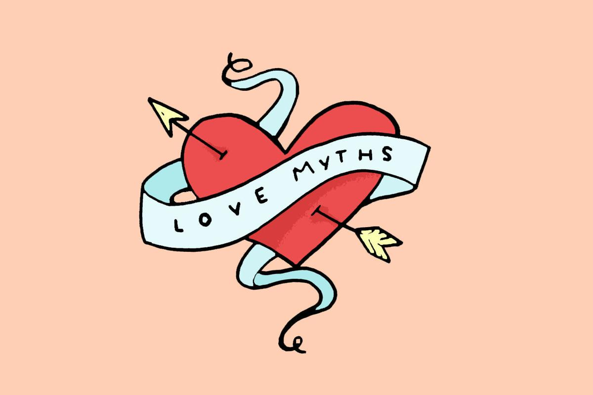

Relationships within the family and outside family are subject to constant debates as being an abstract and indefinable aspect of human life; they remain very much confused and uncertain. In fact, human relationships are very much subjective.
The depth, meaning, happiness etc., differ from person to person.
Following the exact path of a successful relationship in one person's life
may not be equally beneficial or another one. Yet there are certain commonly
accepted modes of being in relationships.
"
True love is something that happens to all of us only once in our lives.
"
There are several types of relationships that exist among human beings.
Family relationships, romantic relationships, parental relationships,
extramarital relationships etc., are few among them.
Being in a relationship is an added responsibility and obligation
as the success of any relationship is the collective result of the attitudes,
behavioral patterns and personal preferences of two or more people included in
the relationship. There are few relationship myths; usually people believe to be true.
Let us explore few of such commonly held relationship myths. It is an obvious myth and also a mistake to believe that each and every person has a true love or soul mate. You get into relationship with a person not because he/she is the one and only person who fits your requirements and matches your mind.
The person is just one among many of similar type.

Many people hold the belief that similar personalities and mindsets attract
each other and force them into relationships. But it is a myth and
wrong notion. It is not the mentality or personality that attracts people.
No one is similar in the world as individuality is the most significant aspect of human life.
People who go hand in hand in certain aspects may differ in other elements.
For example, people who like the same food may differ in their political mentalities.
Similarity is just a vague concept. If two people are ideal for all their attitudes and aspects,
then the concept of individuality is meaningless.